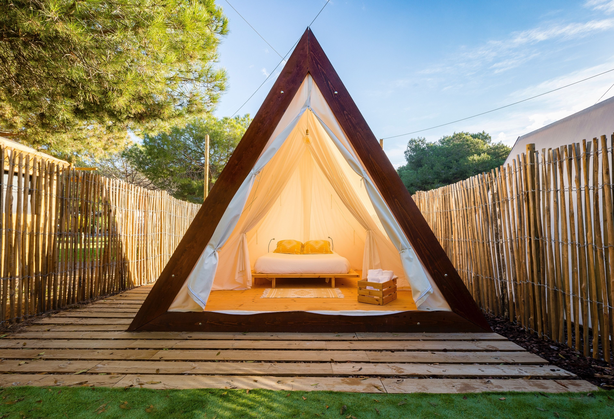

Tendes Rústiques per els Pirineus Catalans
Si ets un apassionat del senderisme, els Pirineus catalans són una destinació que no et pots perdre. Aquesta regió combina la bellesa natural amb una rica història i cultura, oferint rutes que s'adapten tant a principiants com a excursionistes experimentats. A continuació, et presentem algunes de les rutes més destacades:
- La Ruta dels Estanys Amagats: Aquesta ruta et porta a descobrir alguns dels llacs més espectaculars dels Pirineus. Amb paisatges alpins impressionants, aquesta caminada és ideal per als amants de la fotografia i la tranquil·litat. La ruta inclou parades a l'Estany de Sant Maurici i l'Estany de Colomers.
- El Camí dels Bons Homes: Una ruta històrica que segueix les passes dels càtars, des del Santuari de Queralt fins a Montsegur, a França. Aquesta caminada combina natura i història, passant per boscos frondosos, castells medievals i pobles amb encant.
- La Vall de Núria: Una de les rutes més populars dels Pirineus. Pots començar des de Queralbs i pujar fins al Santuari de Núria, gaudint de vistes espectaculars al llarg del camí. Aquesta ruta és perfecta per a famílies, ja que també es pot accedir amb el tren cremallera.
- El Parc Nacional d'Aigüestortes i Estany de Sant Maurici: Aquest parc nacional ofereix una gran varietat de rutes, des de passejades fàcils fins a caminades més exigents. Els seus paisatges, amb llacs, cascades i muntanyes, són únics a Europa.
- El Pedraforca: Una muntanya emblemàtica de Catalunya, ideal per als excursionistes més experimentats. La seva forma característica i les vistes des del cim fan que aquesta ruta sigui una de les més espectaculars dels Pirineus.
A més de les rutes esmentades, els Pirineus catalans ofereixen moltes altres opcions per explorar. Des de caminades curtes fins a travesses de diversos dies, hi ha una ruta per a cada tipus d'excursionista. No oblidis portar l'equipament adequat i respectar l'entorn natural per garantir una experiència segura i sostenible.
Així que prepara les teves botes de muntanya, carrega la motxilla i endinsa't en la bellesa dels Pirineus catalans. Cada pas que facis et portarà més a prop de la natura i et regalarà moments inoblidables.